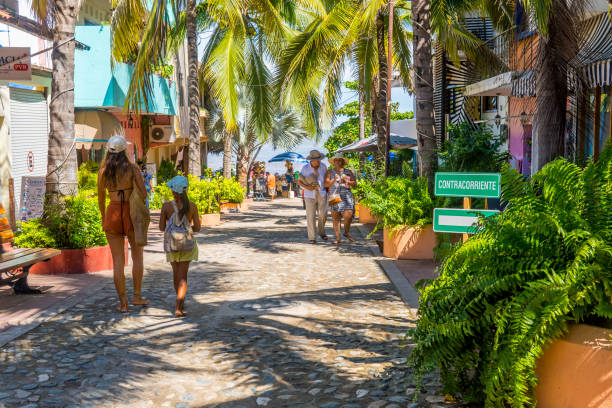
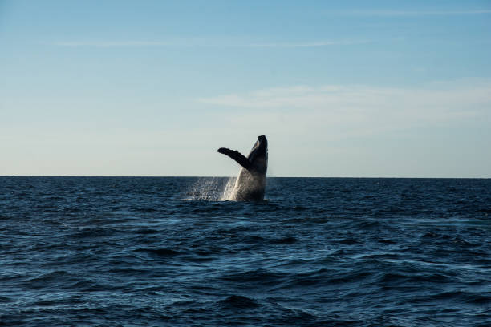

Sayulita, un pintoresco pueblo costero ubicado en la Riviera Nayarit, México, ofrece una vida tranquila, vibrante y en contacto con la naturaleza. Famoso por sus playas, su ambiente bohemio y su comunidad multicultural, Sayulita ha pasado de ser un pequeño pueblo pesquero a un destino turístico internacional sin perder del todo su esencia local.
|  |  |  |
||||
| Mar | Calle | Playa | Playa | Mar | Bavacia (lol) | Arena |